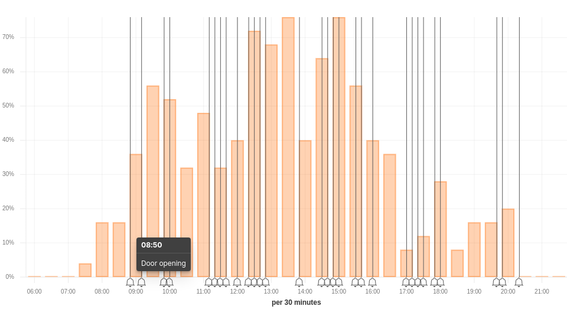
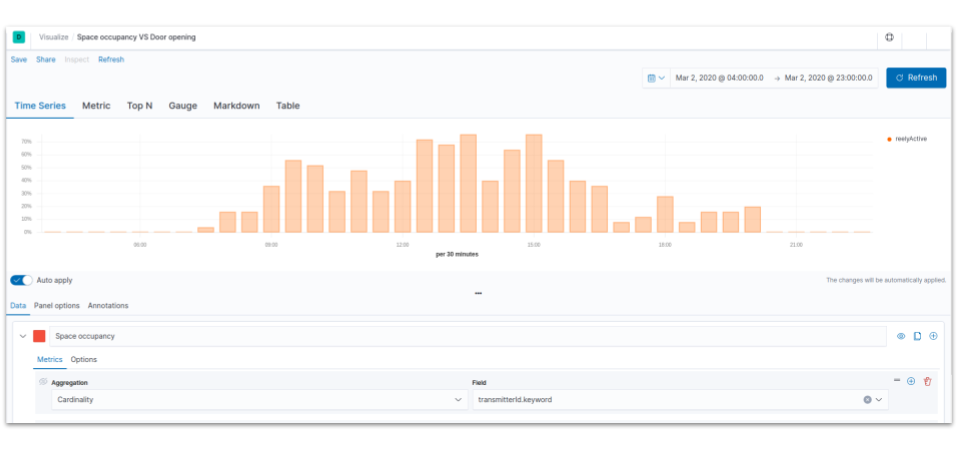
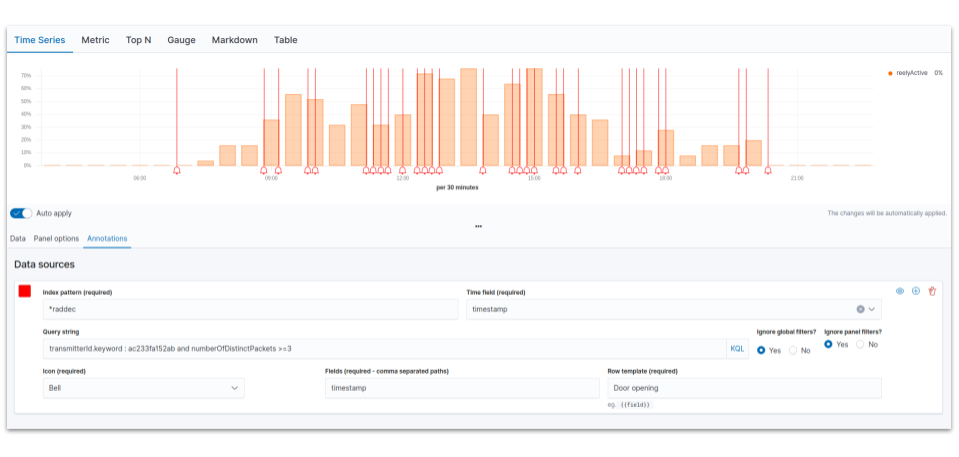

Create Annotations in Kibana
Our step-by-step guide to highlight key information or anomalies in a Time Series visualization.
The TL;DR (Too Long; Didn't Read)
Learn how we at reelyActive use Kibana annotations in TSVB visualisations to highlight specific occupancy and behaviour events.
- What will this accomplish?
- An annotated visualisation which highlights specific information such as the opening of a door.
- Is there an easier way?
- Manual observation and analysis using pen and paper?
- So why would I read this?
- To learn both how and why to annotate specific events in a TSVB visualisation.
Prerequisites
reelyActive open source software with Elasticsearch and Kibana.
-

[Optional] Set up a hosted Elasticsearch Service
Includes our step-by-step guide to setup Elastic's convenient hosted cloud service. -

[Optional] Create a TSVB visualisation in Kibana
For instance this tutorial is a step-by-step guide to observe room occupancy over time using the Time Series Visual Builder.
In order for there to be data to visualise, the reelyActive software must also have collected and written raddec data to Elasticsearch.
Selecting a TSVB visualisation Step 1 of 2
Select an existing TSVB visualisation to which annotations should be added.
- Why TSVB?
- The annotations feature is only available in Time Series Visual Builder (TSBV) in Kibana.
- Why Kibana?
- Kibana makes it easy to visualise data from an Elasticsearch database, where the source data is stored.
Open Kibana and then:
- Select a TSVB visualization from the Visualize tab or Dashboard tab
- Click the gear icon
- Select Edit visualization
The TSVB visualization will open on the Metrics tab. The next step will be to define a meaningful annotation.
Adding annotations Step 2 of 2
Define a meaningful annotation by filtering data and adding it to the visualisation
- Why annotate?
- To help users track information and deepen their understanding of visualisation.
- Why filter the data?
- Filtering removes data that is repetitive or irrelevant.
From the TSVB visualization:
- Click the third tab: Annotations from the main page
- Click the Add data source button
From the Annotations tab:
- Select your Index pattern
- Choose timestamp in the Time field
- Enter your query string in the Search area, by clicking in the Search area Kibana suggests filters
- Select an icon that will be display each time the event will appear
- Enter the Field that corresponds to your query
- Enter a text which will be displayed each time the mouse is over an event.
You should be able to visualise the annotations as below:
Annotations can be added to the TSVB visualisations of a space occupancy dashboard, such as that below.


Winner of a 2020 Elastic Search Award!
For our innovation of making physical spaces searchable like the web.
Where to next?
Create other visualizations, or continue exploring our open architecture and all its applications.
-

reelyActive Kibana integration overview
Find links to all our Kibana tutorials. -

diyActive Home
The home for reelyActive developers.